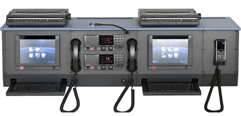
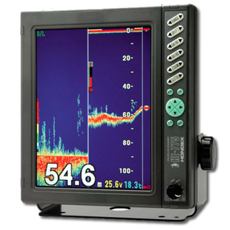
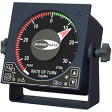
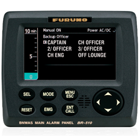

航海仪器
现代商船已不同传统航海，有越来越多的航海仪器辅助驾驶。这些航海仪器能够保证船舶安全的会遇、正确的航行、合理的选择航线。对于船员来说，有些仪器已经非常熟悉，也有一些作为新设备正在进入现代船舶运输中。
根据国际商船运输规则SOLAS第五章，第19条：所有航海仪器必须定期进行检查和测试。船舶所载有的航海仪器取决于船舶的吨位、目的港和建造日期。
所以，下面是商船航海仪器的总体介绍。
磁罗经

磁罗经是最古老最常用的航海指向设备。通过磁场指向北方，在现代导航中作为现代航海的辅助仪器。
陀螺罗经

陀螺罗经是船舶主要的指向仪器。它主要依靠电力推动三相陀螺仪快速旋转指向。
相比起磁罗经，陀螺罗经的指向性更为准确，因为它不依靠地球磁场，不受磁铁影响。
即便在经常变换航向的船舶，陀螺罗经依然能够保持很好的稳定性。
由于很好的准确性和稳定性，陀螺罗经与其他仪器联用维护船舶安全航行。
电子海图显示与信息系统

电子海图显示与信息系统（ECDIS）是计算机技术与海图显示结合的系统，在一定程度上能够替代传统海图。
ECDIS本身只能电子显示海图，但是当其他航海仪器被连接，就能在海图上显示几乎所有的航海有用信息，比如航向、位置、航程等。ECDIS已经成为现代航海最重要的航海仪器之一。
雷达

在雷达的帮助下，可以检测到船舶周围的任何目标：船只、陆地障碍物、冰山等。为此，使用了旋转天线。设备屏幕上显示飞船周围的图片。这些数据可用于避免碰撞，在恶劣的天气条件下特别有用。
船舶上使用的雷达有两种类型：X 波段雷达和 S 波段雷达。X 波段雷达的工作频率约为 10 GHz，波长为 3 厘米（重量和尺寸较小的天线）。由于频率较高，该频段可提供更好的目标分辨率。
S 波段雷达的工作频率为 3 GHz，波长为 10 厘米（桅杆上更大的天线）。 该波段比 X 波段更耐干扰，并在大雨或大雪期间提供更准确的数据。
APRA

ARPA（自动雷达绘图辅助工具）是一种计算机系统，用于处理雷达数据并为船舶雷达覆盖范围内的船舶创建轨迹。
ARPA利用先进的技术，不仅代表当前情况，还可以预测未来情况。该系统计算被跟踪物体的航向、与其他船只安全通行所需的速度、时间和距离。如有必要，用户可以获得有关所选目标的更多详细信息。
自动舵

自动舵是驾驶台导航设备中真正不可或缺的组成部分。它通过电子或液压驱动，旨在自动控制船舶的转向机构并将其保持在设定的航向上。通过将转向保持在自动驾驶仪模式，导航员可以专注于其他关键任务，例如碰撞风险评估和避免。
现代自动驾驶系统还可以与 ECDIS 同步，这使它们能够遵循电子海图上列出的路线。
该设备与陀螺罗盘同步。如果后者有任何故障，那么自动舵将产生极大的误差，这是驾驶员特别需要注意的。
自动驾驶仪不能完全取代人类。在限制水域和高密度交通区域航行时，船舶必须手动作。
AIS

AIS（自动识别系统）是一种自动跟踪系统，用于使用 VHF 无线电波（频率 161.975 MHz 和 162.025 MHz）识别船舶、其尺寸、航向、速度、位置和其他数据。它的主要任务是降低船舶碰撞的风险。
与雷达不同，雷达能够检测船舶附近大型漂浮物体的出现并大致估计其当前方向和速度，AIS 提供有关导航情况的更详细、更准确的信息。它显示在 AIS 站或 ECDIS 的屏幕上。
配备 AIS 的船舶必须不断保持其运行状态。在国际协定规定保护航行信息
GPS

GPS依靠卫星能够几乎实时的确定船舶的位置。通过其他设备辅助，它可以高精度地确定船舶的坐标、速度、航向和覆盖两个给定点之间距离所需的时间。
计程仪

计程仪用来测量船舶航行的速度和航程。获取的数据可以用来进行航机推算，辅助船舶航行。
全球海上遇险和安全系统

全球海上遇险和安全系统 （GMDSS） 使用地球和卫星技术以及船舶无线电系统。该系统在船上的组件是 VHF、MF/HF 和 DSC、Navtex、无线电传、SART、EPIRB、Inmarsat-C。
GMDSS 控制台用于向沿海服务部门通报船舶的紧急情况，以及接收海上安全信息并通过无线电与其他船舶进行通信。
VDR

VDR（Voyage Data Recorder）是一种类似于飞机上携带的黑匣子的设备。它是极其重要的导航设备，可持续记录船上发生事故时进一步调查所需的所有信息。
有不同类型的数据记录器，但它们都提供紧急情况发生前最后 12-24 小时的数据。
测深仪

测深仪用于通过发送声音脉冲来测量容器下方的深度，声音脉冲从底部反弹并返回船舶。
旋回指示器

旋回指示器 （ROTI） 显示船舶以舵的固定旋转角度转弯的速度。转弯速度以度/分钟为单位。
ROTI 有两种类型：数字和模拟。
ROTI 作为与转向/自动驾驶仪集成的独立设备安装在船上。
远程识别追踪系统

远程识别追踪系统（LRIT）是国际海事组织建立的国际船舶跟踪和识别系统。它旨在增强航运安全并确保海洋环境的保护。
根据《国际海上人命安全公约》第五章第19.1条，以下类型的船舶在国际航行期间必须向LRIT系统传输信息：
客船，包括高速客船;
货船，包括总吨及以上的高速船，以及
移动式海上钻井装置。
驾驶台值班报警系统

驾驶台值班报警系统（BNWAS）是船舶上使用的另一个重要自动化系统。 该系统每 3、9 或 12 分钟发出一次声音，直到按下确认按钮。
因此，BNWAS 的作用是警告值班驾驶员保持专注的值班。如果没有按规定确认可能引起全船大报警。在航行中保持专注的值班是非常必要的，即使是 5 分钟也足以发生严重事故。
该系统应始终运行，只有在船长认为必要时才能停用该系统。
船舶声号

船舶声号一般是指喇叭或汽笛等。船舶声号用于困难的航行情况，如能见度差、交通繁忙等。它还有助于警告船员和附近的其他船只船上发生紧急情况。
船舶号角一般是通过气压或电力驱动工作。可以从驾驶台手动和电动开启。
日光信号灯

除了声音信号外，还有紧急情况的警示灯，也可以在夜间使用。与其他船舶应急设备一样，该灯不仅可以由船舶的主电气系统供电，还可以由应急电池供电。
航行灯

所有船只，无论大小，都必须配备识别灯，以提供有关其类型、大小和移动方向的信息。导航灯用于防止在夜间或能见度降低期间与其他船只发生碰撞。
信号旗

信号旗自古以来就用于导航。目前，使用了48种旗帜，每面旗帜都有自己的含义。它们在《国际信号守则》中进行了描述。例如
字母“B/Bravo”的旗帜表示“我正在接收、卸货或携带危险品”
字母“L/Lima”的旗帜表示“您应该立即停下您的船只”等。
这些是现代船舶的主要导航设备类型。由于采用了先进的技术，导航变得比以往任何时候都更加高效和安全。